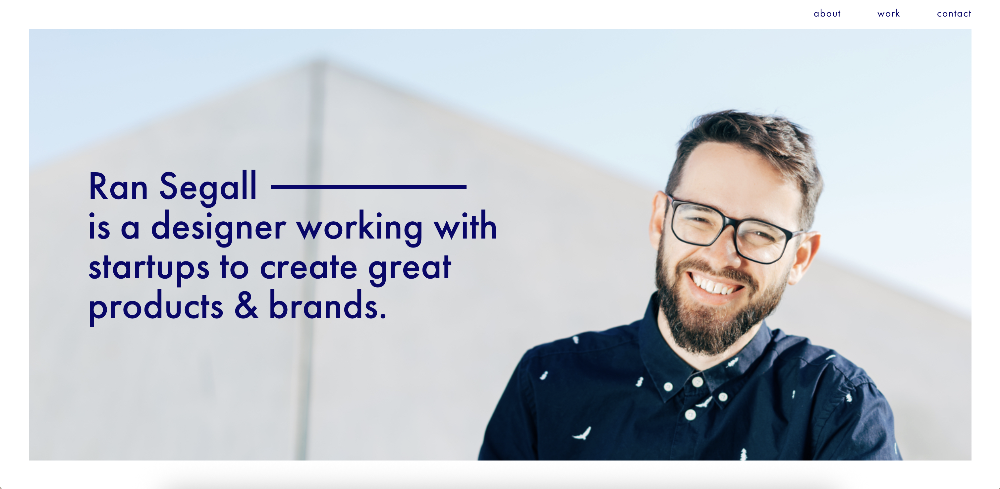
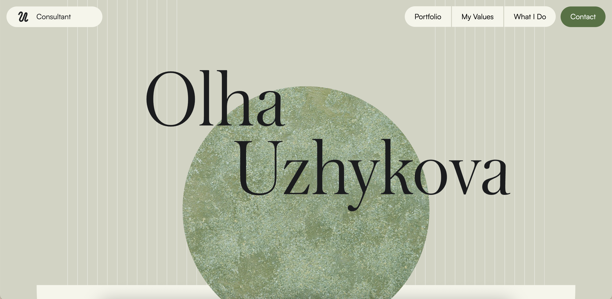
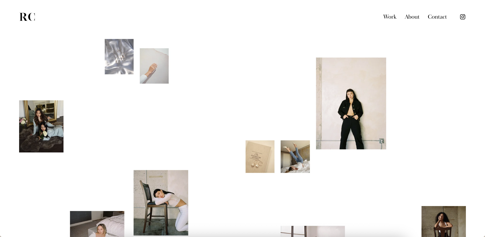
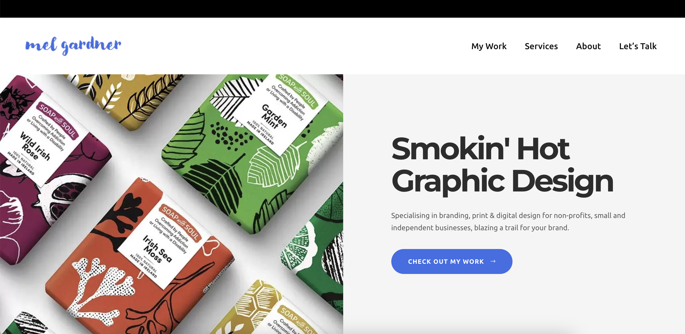
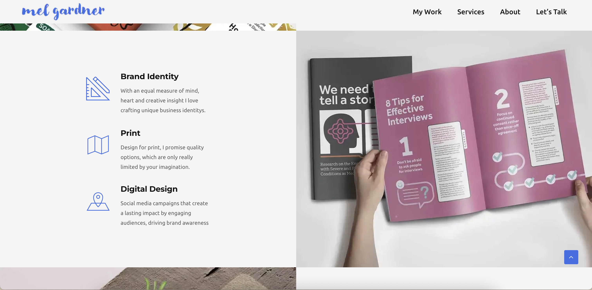
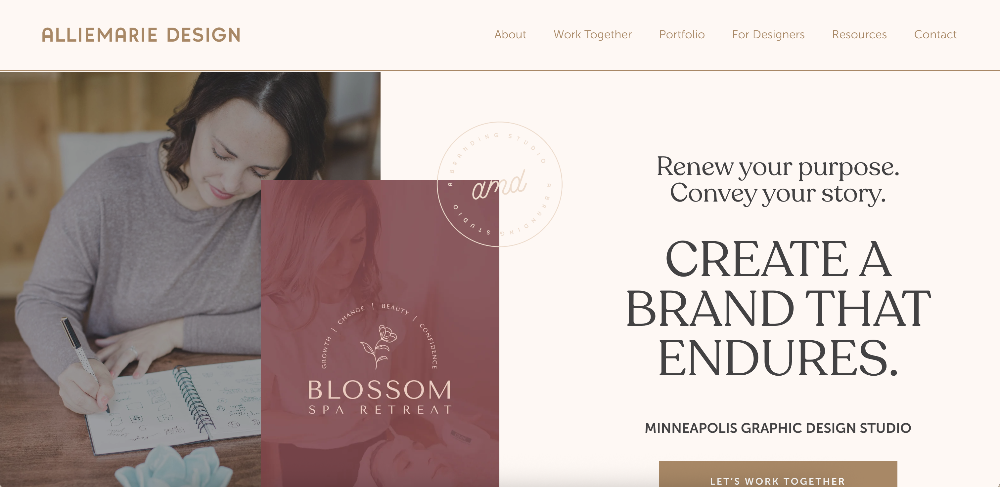
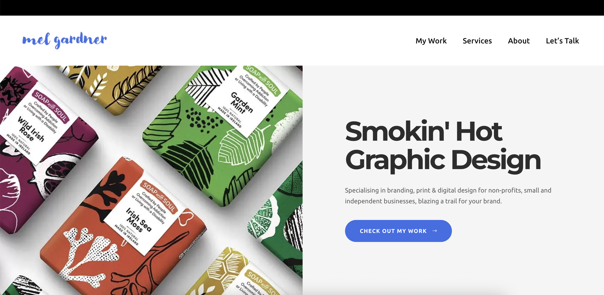
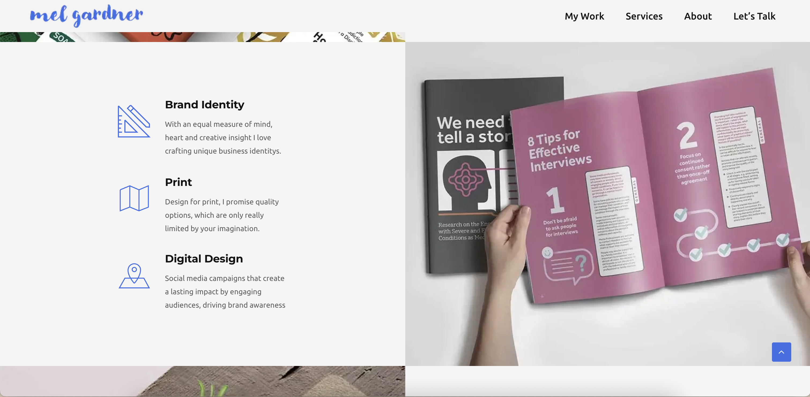
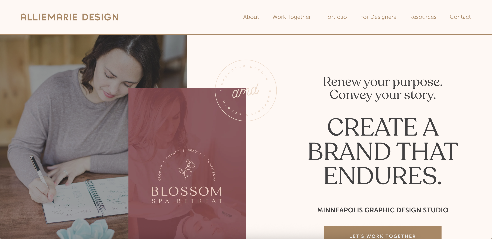

Overview
For my independent project, I will be revamping my portfolio. My current portfolio is from a few years ago and I built it before I had much experience, which means its design is not quite up to the standard I uphold now. In addition, since it was towards the beginning of my SMAD career, I did not have quite as much of a personal brand/style as I do now. Especially as I begin to look for and apply to jobs, It's really important that I have a portfolio that can display my skills and style seamlessly and catch people's attention. That all starts with a personal brand so I plan to create a logo and brand guide, research and find inspiration from other successful portfolios, and then build out a new one for myself that I feel like really displays who I am as a designer and what I can offer to an employer or client.
Goals
Create a personal logo & brand guide
The goal of a portfolio is to introduce a potential client or employer to your personal brand and style, and the work you can offer them. Without a set brand, that's really hard to convey. I want to create a brand guide that helps me keep all my materials cohesive and shows my personal style.
Test different options and then choose the website builder that works best for me
I only really have experience building websites in WordPress, and a little bit in Figma and WebFlow. Before I commit to one website builder to host my portfolio for the time being, I would like to investigate and choose the one that works best for my brain and for my goals.
Take stock of all my projects and only display the ones that I am really proud of
I have a lot of work on my portfolio right now that I am not all that proud of, and that I do not feel showcases my abilities in the best way possible. Conducting an audit of all the work I have from class, internships, personal projects, etc will help me pick out my favorite and most compelling projects and only show those.
Create an eye-catching and unique header
Right now, my portfolio home page and header looks just like any other website, and probably a bit more boring. THis is the first thing a recruiter, potential client, or hiring manager will see and it needs to grab their attention. I want to design something creative that grabs your attention right away and introduces you to my brand from the first second you land on my website.
Analyze the layout and organization of other portfolios to make my website more user friendly and streamlined
Some things in my portfolio are a little bit buried right now. The goal of a portfolio is not a TON of stuff, but rather showcasing the most important things in an easy and engaging way. Cutting back on the amount of pages or changing the ways they are organized will help with that.
Technical Requirements
- Pick a website builder that works for the goals I have
- Use adobe to create a personal brand and header, this will also showcase my skills in Adobe
- Get high quality versions of my best work so that I am showcasing the best possible versions of my work
- Choose work that shows a variety of skills and projects so that I display the breadth of what I can do
- Testing on people to ensure the site is easily navigable
Audience Information (Personas)
Non-Designer Recruiter
Demographics
- Adult age, full time employee, works in HR, not their personal company
Goals & Motivations
- Fill an open position
- Choose strong candidates to propose to the design team
- Bring in strong talent that aligns with the goals of the company
Pain Points & Challenges
- Time - may not have time to really dig deep into a portfolio because there are so many candidates to review
- Doesn't know design like a designer does, has to look into characteristics and experience instead
Behaviors and Attitudes
- Skeptical of candidates who do not show a polished and impressive portfolio because they want to bring someone in who goes above and beyond and shows that
- Tends to spend very little time on designers portfolios since they don't understand them, cares more about effort and experience
Potential Freelance Client
Demographics
- Adult age, may be self-employed, does not have design experience
Goals & Motivations
- Get help with branding and design materials
- Hire someone who can make them and what they sell stand out
- Looking for someone who can help them in their weak area
- Looking to GROW
Pain Points & Challenges
- Time - may not have time to really dig deep into a portfolio because there are so many candidates to review
- Doesn't know design like a designer does, has to rely on if they like what they see and if they like how you present yourself
Behaviors and Attitudes
- Wants a personal relationship with their designer so they can really convey what message they want to be sending
- Tends to spend very little time on designers portfolios since they don't understand them, cares more about connection, relationship and understanding
Timeline
- Logo & brand guide, platform chosen - October 7th
- Before I begin on the rest of the site, I really want to nail down a logo and branding style that fits me and my work. Having this first will help keep the rest of the site cohesive and on theme. I also need to nail down what platform I will be building in before I continue.
- Home page - October 14th
- The most important page of the portfolio is the home page because that is where recruiters look first, and sometimes it's the only place they look. I want to make sure my home page is very engaging before I start on the rest of the website so that it is my strongest point and so I can iterate on it later if I want to. A well designed home page will lead me well into the rest of the pages.
- Project page template/example - October 21st
- To keep things cohesive across my portfolio, I will display each project/client in the same way on their respective pages
- Final site - October 28th
- All pages complete and fully functional
Helpful Linked In Learning Videos
Amplify Your Personal Brand with Generative AI Purpose-Driven Personal Branding Building an Online PortfolioVisual Inspiration
   




